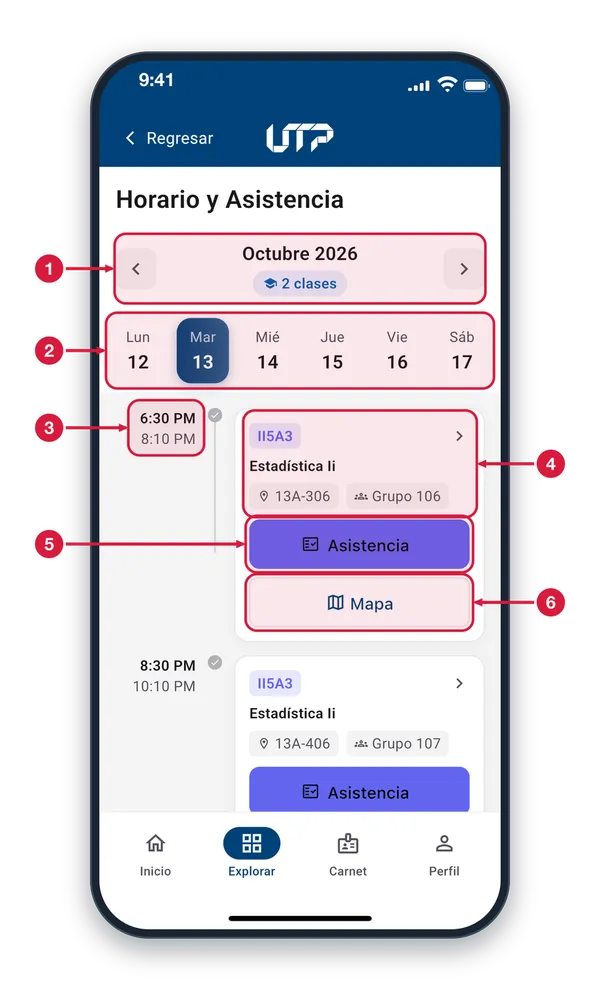
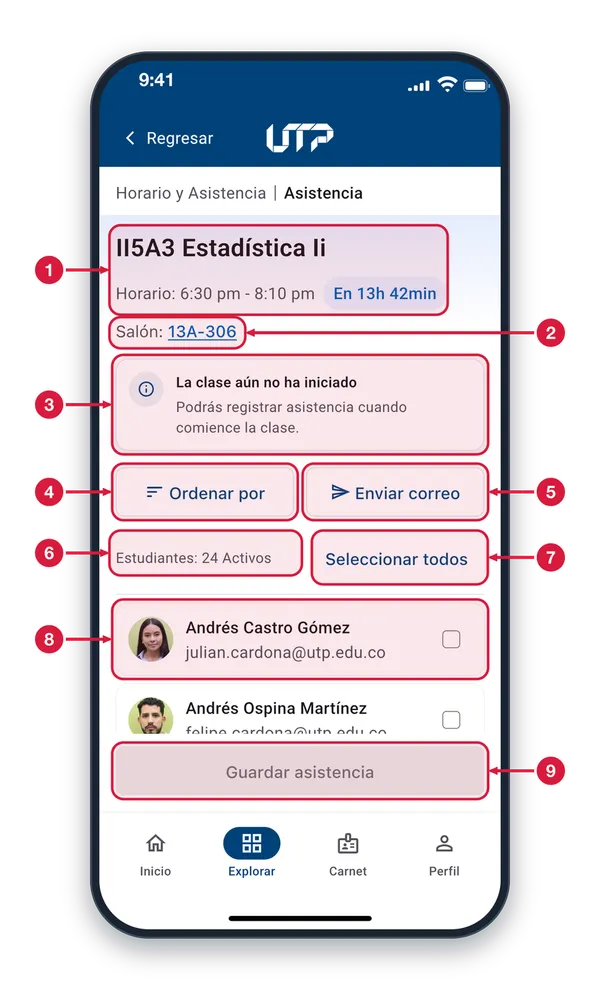
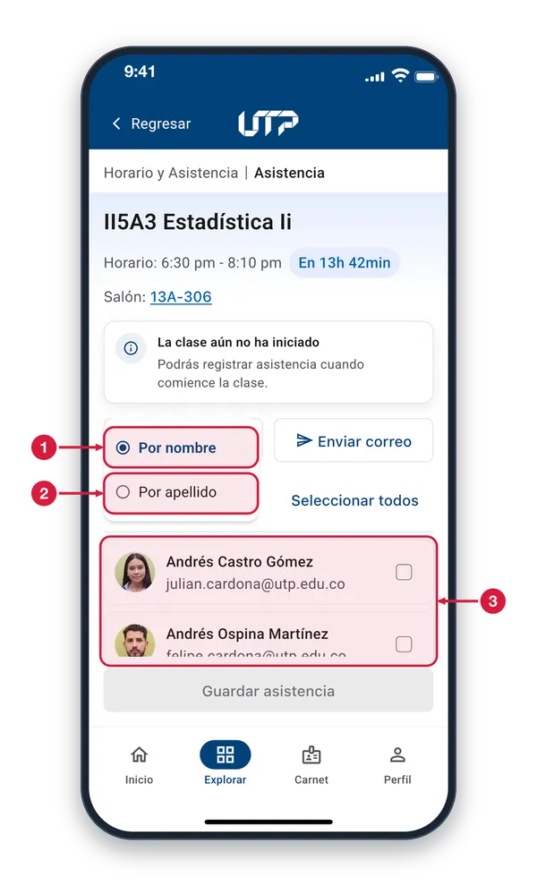
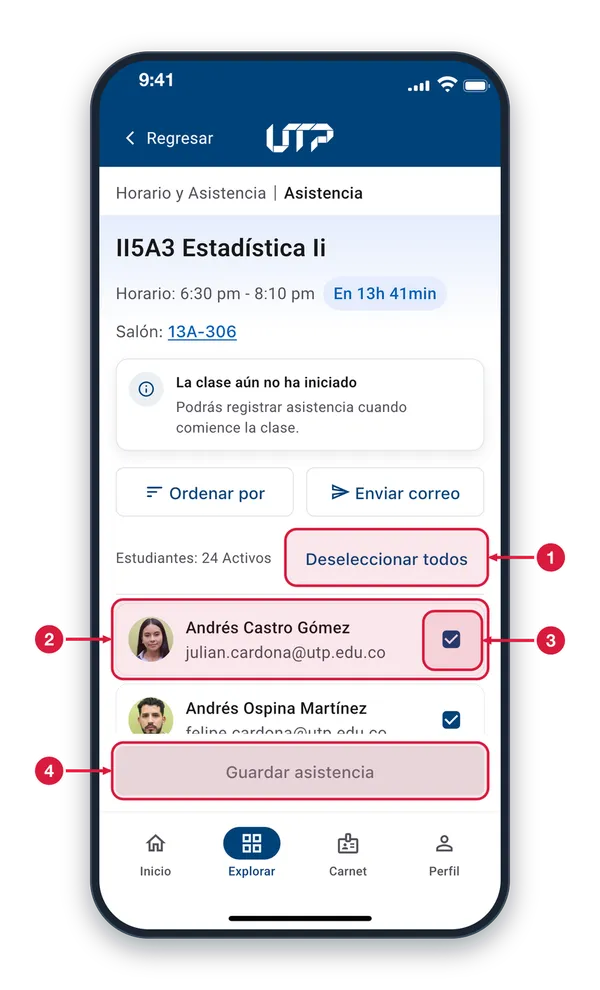
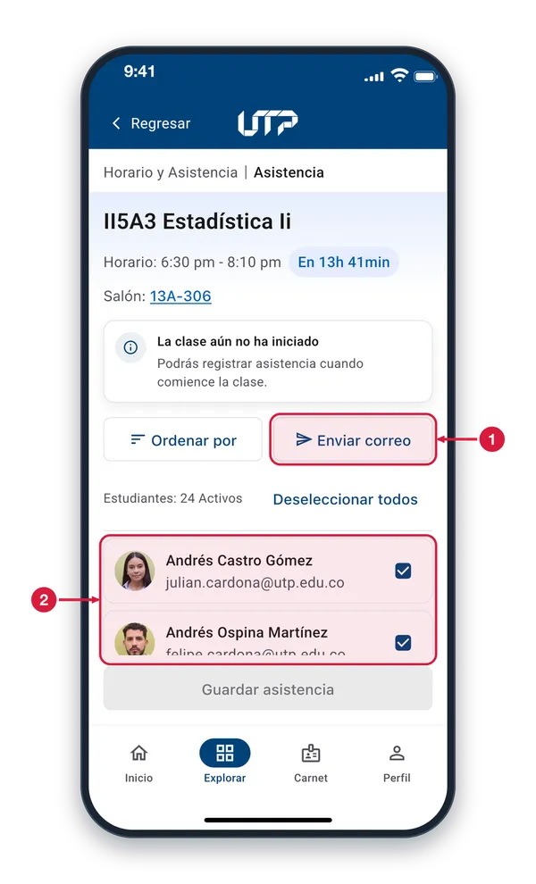
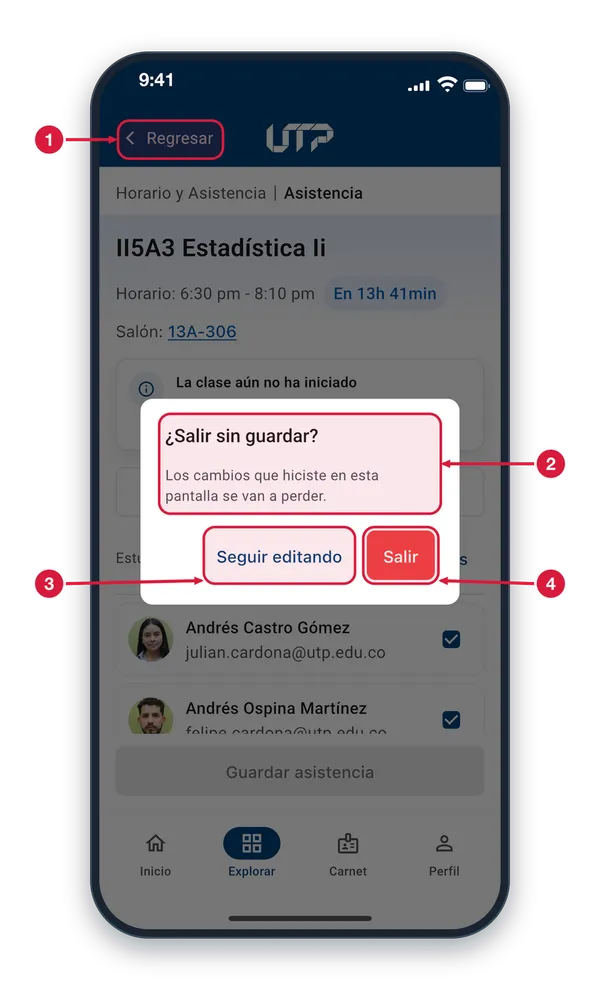

Docentes: registro de asistencia de los estudiantes.
Como docente, registra la asistencia de tus estudiantes desde la app. Solo se puede registrar dentro del horario de la clase asignada.
El módulo de Horario y Asistencia cuenta con:
Horario de clase y salón
Lista de estudiantes activos por clase
Selección individual o masiva con «Seleccionar todos»
Botón «Guardar asistencia» para confirmar el registro
Alerta si intentas registrar fuera del horario asignado
Botón «Enviar correo» para notificar a los estudiantes
Solo podrás ver y hacer uso del módulo HORARIO Y ASISTENCIA cuando te loguees en la aplicación
Horario y Asistencia1 de 6
Tus clases de la semana y del día. Entras desde Explorar > Horario y asistencia o con «Ver horario» en tu perfil.

Semana y clases del día Muestra el mes de la semana y, debajo, cuántas clases tienes en el día elegido. Las flechas cambian de semana; si tocas el mes se abre un calendario para elegir una fecha.
Días de la semana Toca un día, de lunes a sábado, para ver sus clases. El día elegido aparece resaltado y el de hoy lleva un punto cuando no está seleccionado.
Hora de la clase Arriba, la hora de inicio de la clase; abajo, la hora en que termina.
Datos de la clase Código y nombre de la materia, salón y grupo. Toca la tarjeta para abrir la asistencia de esa clase. Las demás clases del día funcionan igual.
Botón Asistencia Abre la pantalla «Asistencia» con la lista de estudiantes de esa clase para que registres quién asistió.
Botón Mapa Abre el mapa del Campus ubicado en el salón de la clase.
Lista de asistencia2 de 6
Aquí marcas quién asistió a la clase. Entras con «Asistencia» en la tarjeta de una clase de Horario y Asistencia.

Clase y horario Materia y horario de la clase. La burbuja cuenta cuánto falta para que empiece; cuando comienza dice «En curso» y desaparece al terminar la clase.
Salón Toca el salón para verlo en el mapa del Campus. Si no tiene salón asignado dice «Sin asignar» y no se puede tocar.
Aviso de clase sin iniciar Aparece mientras la clase no ha comenzado. Puedes revisar la lista y marcar casillas, pero «Guardar asistencia» solo se activa cuando la clase empieza.
Ordenar por Abre un menú para ordenar la lista de estudiantes por nombre o por apellido.
Enviar correo Abre tu aplicación de correo con un mensaje para los estudiantes de la clase, en copia oculta. Aparece desactivado si ningún estudiante tiene correo.
Contador de estudiantes Indica cuántos estudiantes activos tiene la clase.
Seleccionar todos Marca de una vez a todos los estudiantes como presentes. Si ya están todos marcados, el botón pasa a «Deseleccionar todos».
Tarjeta de estudiante Foto (o iniciales), nombre y correo. Toca la tarjeta o su casilla para marcarlo presente; sin marca queda ausente. Las demás tarjetas funcionan igual.
Guardar asistencia Guarda la asistencia de todos los estudiantes de la lista. Está en gris hasta que la clase comienza; al guardar aparece «Asistencia guardada correctamente».
Ordenar la lista3 de 6
Al tocar «Ordenar por» se abre un menú para elegir cómo se ordenan los estudiantes de la lista.

Por nombre Ordena la lista alfabéticamente por el nombre. El círculo relleno marca el orden actual; este es el que se usa al abrir la pantalla.
Por apellido Ordena la lista alfabéticamente por apellido. Al tocarla, el menú se cierra y la lista se reordena al instante.
Lista de estudiantes Cambiar el orden solo mueve a los estudiantes de lugar: las marcas de asistencia que ya hiciste se conservan.
Seleccionar a todos4 de 6
«Seleccionar todos» marca a todos los estudiantes como presentes de una sola vez.

Deseleccionar todos Con todos marcados, el botón cambia a «Deseleccionar todos». Tócalo para quitar la marca a todos los estudiantes de una vez.
Tarjeta de estudiante Cada estudiante queda con su casilla marcada. Toca la tarjeta de uno para quitarle la marca: ese estudiante quedará ausente. Las demás funcionan igual.
Casilla marcada La casilla con la palomita significa que el estudiante quedará registrado como presente al guardar.
Guardar asistencia Sigue en gris porque la clase aún no comienza: las marcas no se guardan hasta que empiece. Cuando comience, tócalo para guardarlas.
Enviar correo a la clase5 de 6
«Enviar correo» abre tu aplicación de correo con un mensaje para los estudiantes de la clase.

Enviar correo Abre tu correo con los estudiantes en copia oculta. Si el celular no tiene correo configurado, aparece el aviso «No se pudo abrir el correo en este dispositivo».
Tus marcas siguen igual Enviar el correo no cambia la lista ni tus marcas: al volver a la aplicación todo sigue como lo dejaste.
¿Salir sin guardar?6 de 6
Aviso que aparece al tocar «Regresar» cuando marcaste asistencia y aún no la guardaste.

Regresar Con marcas sin guardar, al tocarlo aparece este aviso. Si no hay cambios pendientes, sales directo a «Horario y Asistencia».
Mensaje del aviso Los cambios de esta pantalla, como las marcas de asistencia, se pierden si sales sin guardarlos. También aparece si tocas una pestaña de la barra inferior.
Seguir editando Cierra el aviso y te deja en la lista con tus marcas intactas.
Salir Sale de la pantalla y descarta las marcas que hiciste. Vuelves a «Horario y Asistencia».